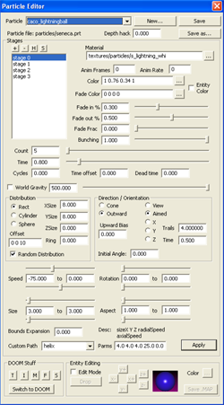

|
|
| Making DOOM 3 Mods : The Particle Editor | |
|
|
 |
|
|
|
 The particle editor is fairly intuitive, so let's just go through it from top to bottom. The first box selects the particle system that is being edited. New creates an empty particle system, save saves the current system, save as saves the system with a new name. Pretty simple stuff here. Don't worry too much about Depth Hack, it's there to help solve some issue with depth sorting (drawing one particle on top of another), but you probably won't need to use it. The big section in the middle is for editing the various stages of the particle effect. Most particle effects only have one stage, but you can really have as many stages as you want. Each stage is almost like an entire particle effect in itself, but all the stages share some common properties like attachment point and direction. The best demonstration of this is the particle effect on a smoking barrel. You see some normal black smoke, but a little bit of fire, and some little ashes that drift away with the smoke. This effect is created with three different stages (one for each of the effects I mentioned). You can add a new stage by clicking the + button, and delete an existing stage by clicking the - button. The order of the stages does not matter. The H button will hide the stage, and the S button will show a hidden stage. How it looks
The first box on the right lets you select the material used for this stage. Each
stage can only use one material, which is one reason why the smoking barrel had to
use three different stages.
The Anim Frames and Anim Rate boxes allow you to specify 'film strip' animation for the particle. A really good example of this is in "barrelfire" stage 2. The material is 7 frames of a fire ball juxtaposed in a single texture. Anim Frames is set to 7 so it turns it knows it's an animation. Anim rate is normally set to 0, in which case it runs through one cycle of the animation, but if it is not zero then the number specifies how many times it runs through the animation before the particle dies. For example, an anim rate of 2 will run through the animation twice before the particle dies. The next box lets you set the surface color for the particle (normally this will change the color of the particle, but it depends on the material). You can also select entity color, in which case it will use the color of the entity that this particle stage is attached to. The fade color is the color the particle fades to over the course of it's life cycle. The fade color is used for both a specified color and for entity color. How it fades
Fade in % and Fade out % define the amount of time spent fading in and fading out. If
"fade in" is set to 0.5 and "fade out" set to 0.0 then the particle will spend half it's
life fading in, the other half it will be fully visible, then it will just disappear without
fading out at all. Fade fraction is used to fade out the entire stage as a whole, and is
mostly used for fading out muzzle smoke.
If Fade Fraction is set higher than 0, then any particles created past that point in the life of the stage will be extra faded. In the case of the muzzleSmoke particle, Fade Fraction is set to 0.85, which means the last 15% of the particles will be faded more than the rest (with the last particle being almost invisible). The "lifetime" of the stage is determined by Count which is described in more detail later. How it lives and dies
Bunching is used to squish the particles together. If the time is set to 10 seconds and
bunching is set to 0.8 then all the particles will spawn in the first 8 seconds, then
none will spawn for 2 seconds. Setting it to zero causes all the particles to spawn
at once.
Count of course increases the number of particles in this particular effect. Time sets the lifetime for a particle. The time is used for calculating all the fades, as well as for controling bursting as we have already seen. Time is a factor in almost all the equations dealing with particles. Cycles sets how many times the stage will repeat. If it is set to zero then it repeats indefinately. Setting it to 5 will cause it to repeat 5 times, etc. Time offset allows you to start a stage after some time has elapsed. This is useful if you have a multistage effect, but you don't want all the stages to start at the same time. Dead time is the time after a particle dies before it respawns. You can create choo-choo train like effects where there's a puff of smoke, then a delay, then a puff of smoke, etc. The Gravity of Particles
The slider underneath Time Offset and Dead Time controls how strong 'gravity' is for these particles. Negative numbers indicate 'up' whereas positive numbers indicate 'down'. Checking the "World Gravity" box indicates the gravity should be aligned with the world gravity, otherwise it is aligned with the normal (direction) of the particle emitter. Distribution
Distribution controls the area in which the particles are initially spawned. Rect, Cylinder,
and Sphere select the shape of the spawn area, and XSize, YSize, ZSize change the size of the
spawn area in each of the three axis. Ring (which is only available for cylinder and sphere)
will cause the particles to form in a ring pattern. The number specifies the inner radius of
the ring, the outer radius is defined by the size values above it. A value such as 3 to 6
tends to yield pretty good results. Offset just moves the entire area over by some amount
(this is most useful when creating a multi-stage effect). Unchecking random distribution
will cause all the particles to spawn from the same place (at offset + [xsize, ysize, zsize])
Direction / Orientation
Direction controls the direction the particles move in. The only two options are Cone and
Outward. If Cone is selected then you can specify the size of the cone by specifying the
Angle. The direction of movement will fall somewhere between -angle and angle. If Outward
is selected then you can specify the Upward Bias. This value is added to the Z component
after a random direction is chosen. The consequence is most particles will tend to travel
in that direction.
Orientation controls which way the particles face. View makes the particles always face towards the player. This is normally the option that will be chosen. Selecting X, Y, or Z will cause the particle to be aligned to the X, Y, or Z axis respectively. There's not much reason to align to the X or Y axis but aligning the particles to the Z axis is useful for creating effects that affect the floor (such as the spawn in effect or some of the Archvile effects). The final option is Aimed. This option will cause the particles to face the player, but they will be stretched out. This can be used to make bullet tracers, wiggly worms, sparks, or just about anything else. When Aimed is selected, two more options are enabled: Trails and Time. Time controls how long the particle stretches (literally the particle is drawn from it's current position to it's position time seconds ago). Trails controls how many segments are drawn. The higher the number, the more 'curvy' the trail gets. Adding segments does not make the particle stretch longer, only increasing time does that. Normally the every particle is rotated some random amount. Specifying the initial angle will cause all the particles to start of rotated the same amount (specifically, the amount specified in the Initial Angle box). Particle Behavior
The last section controls how particles act once they are spawned. There are four groups of
values at the top, each one with a slider above and below it. The top slider controls the
value the particle starts at, and the bottom slider controls the value the particle ends at.
For example, setting the top slider (which is the left box) to -75 and the bottom slider (which is the right box) to 0 in speed will cause the particles to start moving at -75 units/second, but linearly slow down to 0 units / second over the life of the particle. Another example is setting the start size to 0 and the end size to 20 will cause the particle to appear to grow, most smoke is done this way. Changing the rotation value will change the particle rotation speed (not the rotation angle). Changing the Aspect will change the width / height aspect ratio. The width is set to the size, and the height is set to size * aspect. Bounds expansion lets you add some constant amount to the size of the bounding box surrounding the particle system. This is only needed if you encounter a weird situation where your particles are disapearing when you face a certain direction. What is actually happening is the particle system is getting clipped with the view frustum because the bounds is too small. This theoretically shouldn't ever happen, but in reality it sometimes does. Custom path is the way to make your particles follow predefined patterns that would otherwise be impossible to do. Specifying a custom path will override the distribution and direction values set above. To use the custom path, select it from the box, then enter the parameters for the custom path in the box to the right. Most custom paths have some parameters to vary how the path behaves. Some have more than others. A brief description for the parameters comes up above the custom Params box when you select a custom path. Testing and Editing
The very last bit of buttons on the bottom is for testing the particles and for modifying
particle emitters. A map has to be loaded before those buttons do anything. Clicking
save .map after modifying some particle emitters will save those emitters to the .map file.
Hover over the TIMFS buttons to get a description for what they do.
Useful Tip: Clicking "Switch To Doom" will switch to the game window, but switching back
to the editor can be tricky because your cursor disapears. The easy way to solve this
is by binding a key to "editParticles" Press that key (I use P) and the edit particle
window will come up (if it is already open, it will become focused).
|
 |
|
| Copyright © 2004 id software |